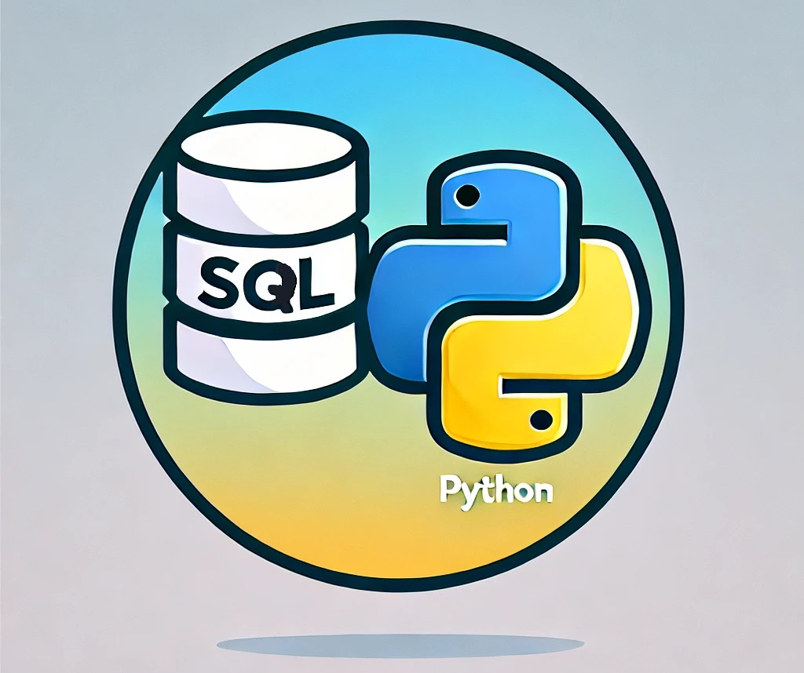
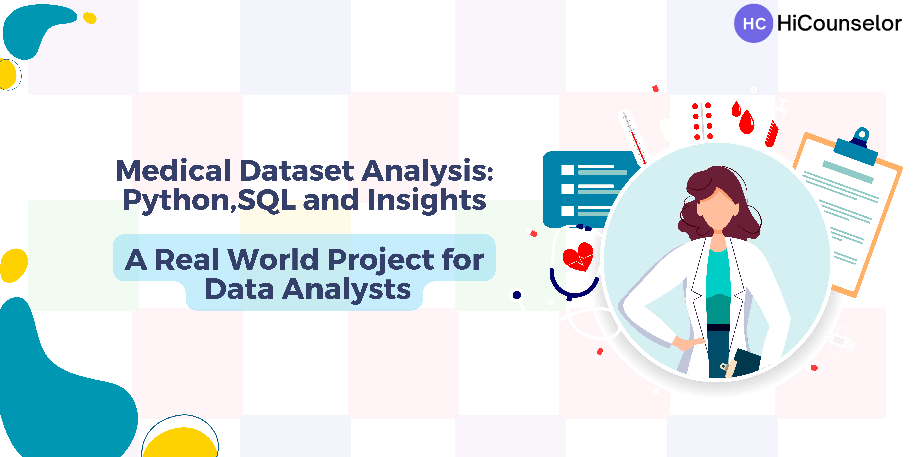
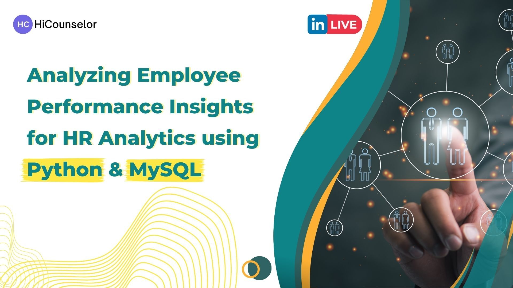
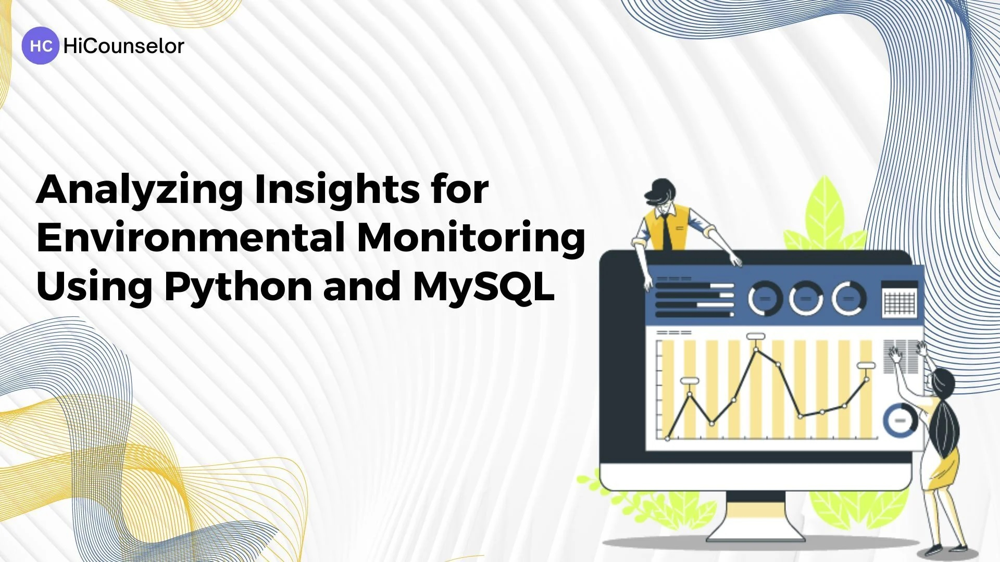

Python & SQL are essential tools in the toolkit of any data analyst, especially when conducting exploratory data analysis (EDA). SQL is the go-to for efficiently extracting, querying, and aggregating data from relational databases, while Python offers powerful libraries for data manipulation, visualization, and statistical analysis. Together, these tools streamline the data analysis process, enabling analysts to clean, explore, and visualize datasets effectively, uncovering key insights for decision-making.


The primary goal of this project is to conduct a comprehensive analysis of healthcare data, aiming to uncover valuable insights that have the potential to revolutionize decision-making in healthcare and optimize resource allocation for the betterment of patients' lives. The project centers around three crucial datasets: "hospitalization_details," "medical_examinations," and "names." It is structured into three key modules, with the initial phase dedicated to thorough data cleaning to ensure accuracy and proper structure. Once the data is refined, the second module leverages the power of SQL queries to extract meaningful and actionable insights. The third module takes a step further by visualizing the data through a meaningful and interactive Power BI Dashboard.

In this project, I worked on a real-world HR dataset, focusing on data preprocessing with Python to remove duplicates, validate values, and check for inconsistencies. Key insights were derived from metrics like average training scores, prior ratings, service length, and awards. I conducted data analysis using MySQL and developed a comprehensive Power BI report to visualize the cleaned data for effective decision-making.

The project aims to analyze Netflix's content catalog by evaluating the distribution of Movies vs. TV Shows, genres, and countries to understand the platform's diversity. It will explore content release patterns over time to identify trends in production and acquisition. By assessing content ratings, the project will determine Netflix's target audience and highlight potential gaps in age groups or content types. Additionally, the analysis will examine the global reach by identifying top content-producing countries and explore growth opportunities, while also revealing popular genres, directors, and content categories to guide future production and licensing decisions.

I conducted a comprehensive analysis of an Environmental Monitoring database, working with data on carbon monoxide, humidity, light, liquefied petroleum gas (LPG), motion, smoke, and temperature for various devices. Using Python's pandas library, I performed robust data preprocessing to address duplicates, null values, and data type inconsistencies. Leveraging MySQL, I extracted key insights, such as identifying the highest recorded temperature for each device and calculating the exponential moving average (EMA) of temperature. Additionally, I analyzed sudden humidity changes, drawing meaningful insights from the data.
The objective of this project is to analyze 120 years of Olympic history using SQL and Python. By working with athlete participation data and medal achievements, the project aims to explore key insights, including medal counts, top-performing athletes, and countries excelling in specific sports. Data preprocessing ensures accuracy and completeness, enhancing the analysis of participation statistics across different Olympic Games.